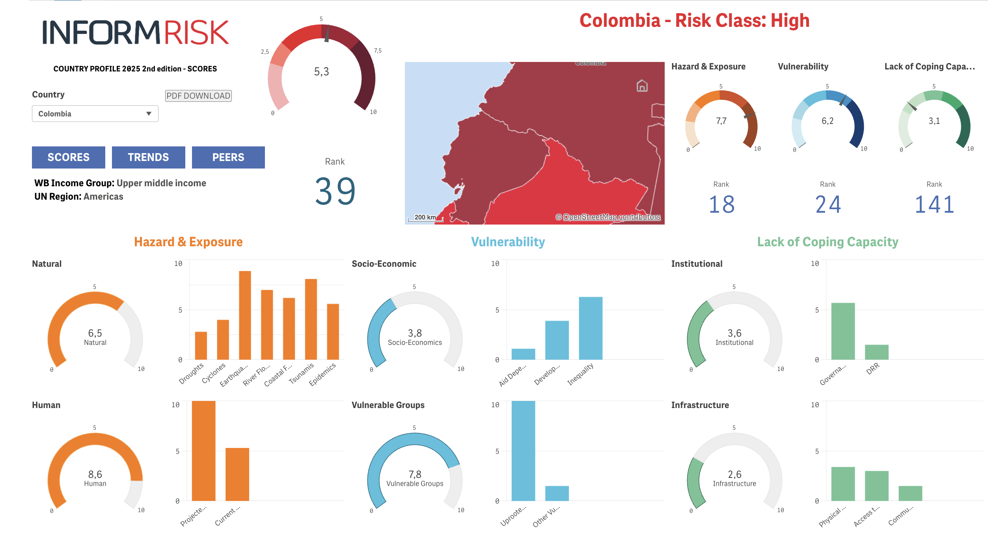
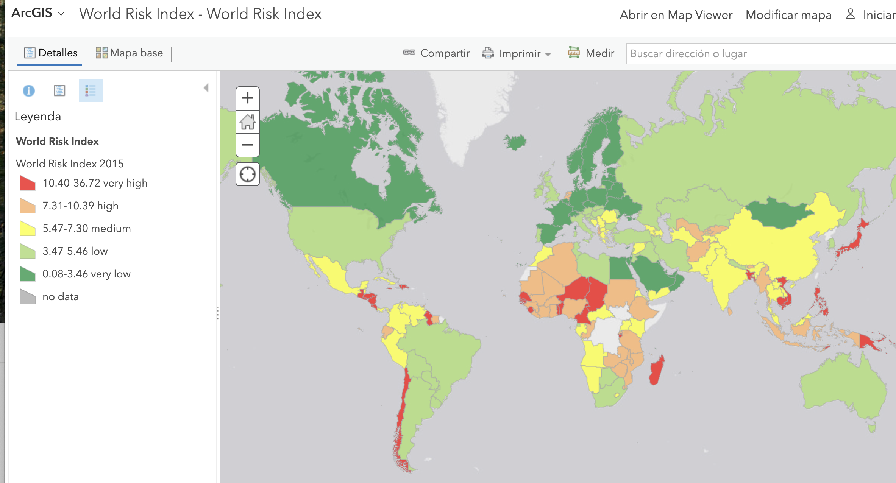

Indicadores de riesgo de desastres
Índicadores nacionales
- Pacific Disaster Center.
- Atlas de Riesgo de Colombia: revelando los desastres latentes. Unidad Nacional para la Gestión del Riesgo de Desastres. 2018. Link.
- Inform Risk. 2015. Link.
- Datos del Consolidado de atención a emergencias. UNGRD. Link.
- DESINVENTAR. Base de datos de pérdidas históricas en Colombia (período 1970-2011). Link.
- COLOMBIA – Censo Nacional de Población y Vivienda – CNPV – 2018. Link.
- Otros riesgos.

Pacific Disaster Center Multi Risk index 2024. Link.
Índicadores mundiales
Lecturas
- Natural hazard risk assessments at the global scale. 2020. NHESS. Link
EmDat
- EM-DAT International Disaster Database. Link.

Inform Risk Index


World Risk Index

The World Risk report
- The World Risk report. Link.


Pacific Disaster Center
Global Disaster Risk Trends. Select a country to view 10-year national trends.

World Economic Forum
- Global Risks Report 2024. Link


Indicadores latinoamericanos
- Atlas de riesgos. Secretaría de Gestión Integral de Riesgos y Protección Civil, Gobierno de la Ciudad de México. Link
Videos
World Risk Index
INFORM Subnational Risk Index in Europe & Central Asia
INFORM Subnational Risk Analysis Training - Module 1
Otras bases de datos
- Plataforma para las Américas. Link.
- Atlas de Riesgos Climáticos para Chile. Link.
- Mapa digital de amenazas y desastres de Chile. Link.
- NatCatSERVICE Database. Link.
- SIGMA (Swiss Re). Link.
- GLobal unique disaster IDEntifier (GLIDE). Link.
- Metabuscador Climate Adapt. Link.
- GDIS, a global dataset of geocoded disaster locations. Scientific Data. 2021. Link.
- World tectonic plates and boundaries. Github. Link
- The Lloyd’s Register Foundation World Risk Poll. Link.
- LEILA – Librería de calidad de datos. DNP. Link
- OECD. Link.
- OECD One. Link. Link. Tutorials. Co-creation project
- United Nations Climate Change. Link.
- Lecturas:
- Worldwide disaster loss and damage databases: A systematic review. 2021. Link.
- Ejemplos de indicadores estatales o departamentales
- Natural Hazard Risk Assessment. Weather.gov. Link